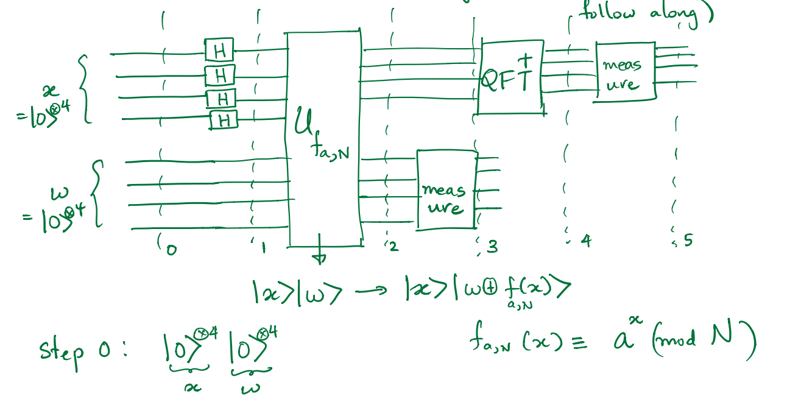

Shor Alogrithm

Step 0
\[\left|{\varphi }_0\right\rangle ={\left|0\right\rangle }^{\otimes n}{\left|0\right\rangle }^{\otimes t}\]
Step 1
\[\left|{\varphi }_1\right\rangle =\left[H^{\otimes n}{\left|0\right\rangle }^{\otimes n}\right]{\left|0\right\rangle }^{\otimes t}=\frac{1}{\sqrt{N}}\sum^{2^n-1}_{q=0}{\left|q\right\rangle }{\left|0\right\rangle }^{\otimes t}\]
For simple we set
\[2^n=N\]
Step2
\[\left|{\varphi }_2\right\rangle \frac{1}{\sqrt{N}}\sum^{N-1}_{q=0}{\left|q\right\rangle }\left|a^q\left(mod\ N\right)\right\rangle \]
According to previous analysis we know that
\[f\left(q\right)=a^q\left(mod\ N\right)\ ,q=0,1,2\dots N-1\ \]
Is a function with period r
\[f\left(q\right)=f\left(q+r\right)\]
Therefore we can rewrite in to this form
\[\frac{1}{\sqrt{N}}\sum^{N-1}_{q=0}{\left|q\right\rangle }\left|f\left(q\right)\right\rangle =\frac{1}{\sqrt{N}}\left( \begin{array}{c}
\left|0\right\rangle \left|f\left(0\right)\right\rangle +\left|1\right\rangle \left|f\left(1\right)\right\rangle +\dots +\left|r-1\right\rangle \left|f\left(r-1\right)\right\rangle + \\
\left|r\right\rangle \left|f\left(r\right)\right\rangle +\left|r+1\right\rangle \left|f\left(r+1\right)\right\rangle +\dots +\left|2r-1\right\rangle \left|f\left(2r-1\right)\right\rangle +\dots \end{array}
\right)\]
\[=\frac{1}{\sqrt{N}}\left( \begin{array}{c}
\left|0\right\rangle \left|f\left(0\right)\right\rangle +\left|1\right\rangle \left|f\left(1\right)\right\rangle +\dots +\left|r-1\right\rangle \left|f\left(r-1\right)\right\rangle + \\
\left|r\right\rangle \left|f\left(0\right)\right\rangle +\left|r+1\right\rangle \left|f\left(1\right)\right\rangle +\dots +\left|2r-1\right\rangle \left|f\left(r-1\right)\right\rangle +\dots \end{array}
\right)\]
\[=\frac{1}{\sqrt{N}}\left( \begin{array}{c}
\ \ \ \left(\left|0\right\rangle +\left|r\right\rangle +\left|2r\right\rangle +\dots \right)\left|f\left(0\right)\right\rangle \\
+\left(\left|1\right\rangle +\left|r+1\right\rangle +\left|2r+1\right\rangle +\dots \right)\left|f\left(1\right)\right\rangle \\
+\left(\left|2\right\rangle +\left|r+2\right\rangle +\left|2r+2\right\rangle +\dots \right)\left|f\left(2\right)\right\rangle \\
+\dots \end{array}
\right)\]
Step 3
While we do a measurement on register 2, if we get some value $f\left(q_0\right)$ ,or which stand for the state $\left|f\left(q_0\right)\right\rangle $, the state in register 1 will collapse into
\[\left|{\varphi }_3\right\rangle =\frac{1}{\sqrt{\frac{N}{r}}}\sum^{\frac{N}{r}-1}_{j=0}{\left|jr+q_0\right\rangle }\otimes \left|f\left(q_0\right)\right\rangle =\left|{\phi }_{q_0}\right\rangle \otimes \left|f\left(q_0\right)\right\rangle \]
Where
\[\left|{\phi }_{q_0}\right\rangle =\frac{1}{\sqrt{\frac{N}{r}}}\sum^{\frac{N}{r}-1}_{j=0}{\left|jr+q_0\right\rangle }\]
Now we will focus on the state in the first register , $\left|{\phi }_{q_0}\right\rangle $
Step 4
We impose Quantum inverse Fourier transform on $\left|{\phi }_{q_0}\right\rangle $
Therefore, according to the formula,
\[{FT}^{-1}\left\{|{\phi }_{q_0}\rangle \right\}=|\widetilde{{\phi }_{q_0}}\rangle =\frac{1}{\sqrt{\frac{N}{r}}}\sum^{N-1}_{c=0}{\frac{1}{\sqrt{N}}\sum^{\frac{N}{r}-1}_{j=0}{e^{\frac{2\pi i\left(jr+q_0\right)c}{N}}}}|c\rangle \]
\[|\widetilde{{\phi }_{q_0}}\rangle =\frac{1}{\sqrt{\frac{N}{r}}}\frac{1}{\sqrt{N}}\sum^{N-1}_{c=0}{\sum^{\frac{N}{r}-1}_{j=0}{e^{\frac{2\pi ijrc}{N}}}e^{\frac{2\pi iq_0c}{N}}|c\rangle }\]
Now if we consider the condition that
\[\frac{rc}{N}\in \mathbb{Z}\mathrm{\ }\mathrm{\ },\ c=\frac{N}{r}k\]
Then
\[e^{\frac{2\pi ijrc}{N}}=1\]
Each exponential term will equal to 1, and there are $N/r$ terms, which gives $N/r$. Meanwhile we also change the variable of c in to $\frac{N}{r}k$ in order to distinguish the state which satisfy the relation of $c=\frac{N}{r}k$
\[|\widetilde{{\phi }_{q_0}}\rangle =\frac{1}{\sqrt{\frac{N}{r}}}\frac{1}{\sqrt{N}}\sum^{r-1}_{k=0}{\frac{N}{r}e^{\frac{2\pi iq_0c}{N}}|\frac{N}{r}k\rangle }\]
Therefore, we finally get the state in the register 1 after inverse QFT.
\[|\widetilde{{\phi }_{q_0}}\rangle =\frac{1}{\sqrt{r}}\sum^{r-1}_{k=0}{e^{\frac{2\pi iq_0k}{r}}\left|\frac{N}{r}k\right\rangle }\]
Or we can just expand the summation in to this way
\[|\widetilde{{\phi }_{q_0}}\rangle =e^{\frac{2\pi iq_0\cdot 0}{r}}\left|\frac{0N}{r}\right\rangle +e^{\frac{2\pi iq_0\cdot 1}{r}}\left|\frac{1N}{r}\right\rangle +e^{\frac{2\pi iq_0\cdot 2}{r}}\left|\frac{2N}{r}\right\rangle +\dots \]
Step 5
When we measure the state $|\widetilde{{\phi }_{q_0}}\rangle $ ,the outcome results $m$ will always be a number equals to an integer times N over r.
\[m=\frac{kN}{r}\]
Since we have already know N, it is easy to derive the period r of the $f\left(x\right)=a^x\left(mod\ N\right)$.
Hint
If $\mathrm{\ }\frac{rc}{N}\notin \mathbb{Z}\mathrm{\ }\mathrm{\ }$
\[\sum^{\frac{N}{r}-1}_{j=0}{e^{\frac{2\pi ijrc}{N}}}=\frac{1\left(1-e^{\frac{2\pi irc}{N}\times \frac{N}{r}}\right)}{1-e^{\frac{2\pi irc}{N}}}\mathrm{=}\frac{1\left(1-e^{2\pi ic}\right)}{1-e^{\frac{2\pi irc}{N}}}=0\]